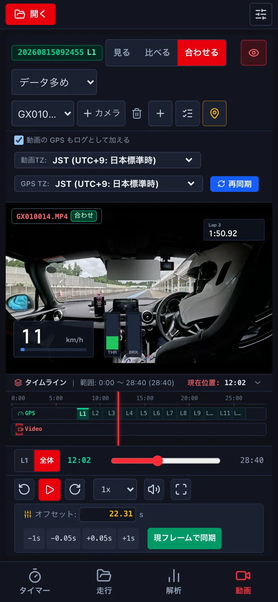
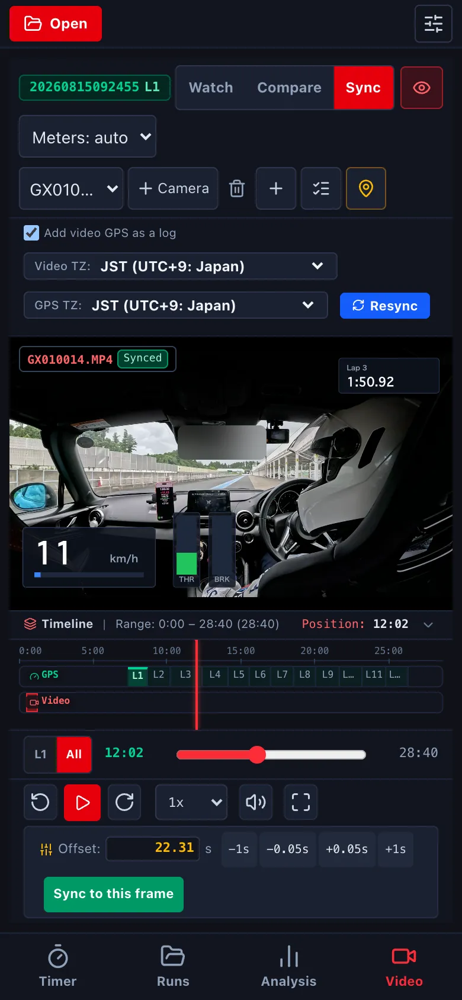
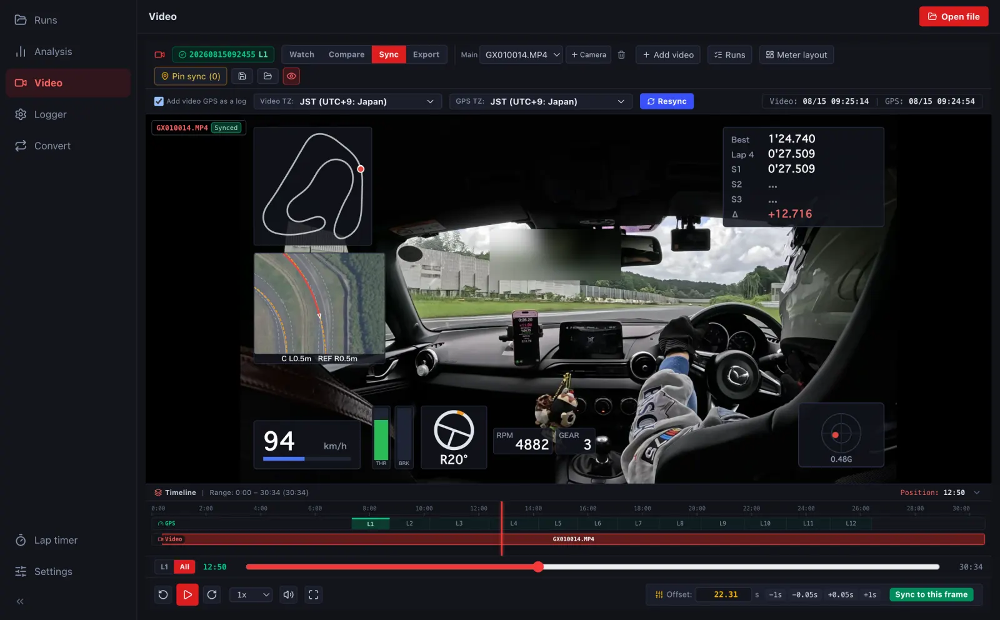

動画とログを合わせるSyncing video and log
ふつうは、動画の撮影の時刻や GoPro の GPS で自動で合います。ずれているときだけ、合わせる で直します。直した結果は走行に覚え、ほかの端末でも同じに開きます。Normally the video syncs automatically from its timestamp or GoPro GPS. Only if it is off, fix it with Sync. The result is saved with the run and used on your other devices too.
-
動画の画面で 合わせる を押します。動画とログのタイムゾーン、再同期、動画とログが重なっている範囲のタイムラインが出ます。Press Sync on the video screen. You get the video and GPS time zones, Resync and a timeline of where video and log overlap.



- 動画の時刻が何時間もずれているときは、タイムゾーンを直して 再同期 を押します。If the video is off by hours, fix the time zone and press Resync.
- 少しずれているときは、オフセット の -1s -0.05s +0.05s +1s で合わせます。動画を計測線などはっきりした場面に止め、ログの位置もそこに合わせてから 現フレームで同期 を押しても合わせられます。For small offsets, nudge with -1s -0.05s +0.05s +1s under Offset. Or pause the video at a clear moment (crossing the line), move the log to the same place and press Sync to this frame.